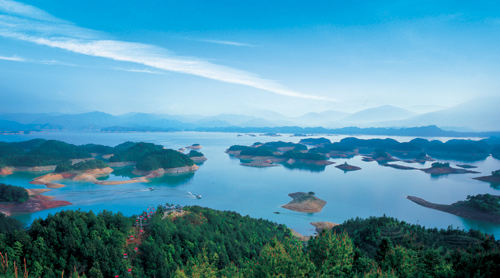

| 首页|千岛湖梅峰关岛|千岛湖五龙岛|千岛湖猴岛|千岛湖鸵鸟岛|千岛湖森林氧吧|上西村瀑布群 |
|  | 梅峰观岛 |
|
||
|
千岛湖梅峰观岛位于千岛湖中心湖区，海拔为226米，为千岛湖湖区小岛的最高点，是鸟瞰千岛湖群岛风光的绝好去处。 梅峰观岛以自然风光优美，生态环境绝佳而被誉为千岛湖风景的精华，因有五府相连的山丘形似一朵盛开的梅花而得名。以群岛星罗棋布、港湾纵横交错、生态环境绝佳而被确定为千岛湖的一级景点。 梅峰观岛景区内拥有丰富的特色景观：带香归、连理松、芸香园、兰花潭、双风桥、紫沙坡、万枝梅海……具有“金龟背负一青松，雪压水沁她从容”之写照的“迎客松”更是堪称千岛湖一绝。 |
| 设为首页|加入收藏|关于我们|您的留言 |
| E游天下网copyright©2017-2022蝴蝶工作室版权所有 |